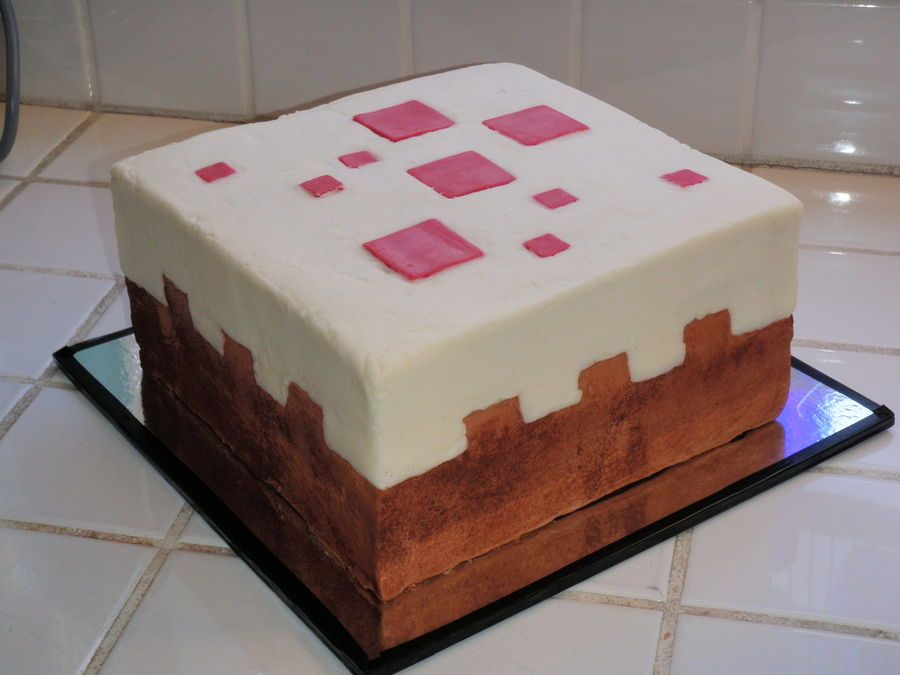

Minecraft Cake

Bring the blocky world of Minecraft to your table with this awesome cake!
Layers of chocolate goodness topped with pixelated fondant fun. It's a
game-changer for any celebration!
Ingredients:
- 2 ⅓ cups all-purpose flour
- ½ cup cocoa powder
- 1 ⅓ cups white sugar
- 1 tablespoon baking powder
- ½ teaspoon salt
- 1 cup milk
- 1 cup unsalted butter, softened
- 4 eggs
- 2 teaspoons vanilla extract
- ¼ cup cherry jam
- 3 cups chocolate buttercream frosting
- 14 ounces marzipan
- 5 drops red food coloring, or as needed
- 1 tablespoon confectioners' sugar, or as needed
-
Preheat the oven to 350 degrees F (175 degrees C). Grease and flour two
9-inch square cake pans.
-
Make the cake: Sift 2 1/3 cups plus 1 1/2 tablespoons flour, 1/2 cup
plus 3 tablespoons cocoa powder, baking powder, and salt together in a
large bowl.
Combine 1 cup plus 1/2 tablespoon milk in a liquid measure.
-
Beat white sugar and butter together in a bowl with an electric mixer
until light and fluffy, about 4 minutes. Add eggs, one at a time,
beating well after each addition.
Beat in vanilla. Add flour mixture
alternately with milk, mixing batter gently between after addition.
Divide batter evenly between the prepared cake pans.
-
Bake in the preheated oven until a toothpick inserted into the center
comes out clean, 30 to 40 minutes. Cool for 10 minutes in the pan, then
invert onto a wire rack to cool completely, about 30 minutes.
-
Assemble and decorate the cake: Trim tops of cake layers to make sure
they are flat. Place one layer onto a serving platter. Spread jam on
top, then cover with the second layer.
Spread chocolate buttercream
frosting over the top and sides of the cake, reserving about 2
tablespoons frosting.
-
Pinch off a piece of marzipan about the size of a golf ball. Add red
food coloring and knead until color is evenly distributed.
-
Dust a flat work surface with confectioners' sugar and roll out
remaining undyed marzipan. Cut out a 9-inch square; carefully transfer
to the top of the cake.
-
Roll trimmings of marzipan and cut into four 9x1 1/2-inch strips. Cut
three rectangular notches into one edge of each strip.
Press strips onto
the sides of the cake, with the notches facing down, then gently press
the top and strips of marzipan together to adhere.
-
Roll out red marzipan and cut into squares of varying sizes. Spread a
little of the reserved frosting on the back of each square to act as a
glue; arrange in a random Minecraft pattern on top of the cake.
Recipe by allrecipes. Check out the recipe
here